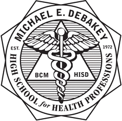

About Me
Hi! My name is Mezu Uwalaka, and I currently attend DeBakey High School for Health Professions. I am the youngest in my family, with two older brothers and one sister. Growing up in a big family has taught me a lot about teamwork, sharing, and always having someone to look up to. At DeBakey, I am passionate about learning, especially in the sciences and health fields, and I enjoy being part of a community that values education and personal growth. I love making new friends, exploring new interests, and finding ways to make every day a little brighter. Thank you for visiting my website and getting to know me better!
My Goals
- Be top 10 in my class senior year
- Get into Texas A&M University
- Launch a medically related nonprofit
- See Hamilton the Musical
- Meet Suni Lee
- Become a pediatrician
Academics
This year, as a sophomore, I am taking a challenging and exciting set of classes: Pre-AP English 2, Spanish 3, Pre-AP Algebra 2, Theatre 2, OnRamps Chemistry, AP World History, Yearbook, and Health Science. My grades and academics are extremely important to me, and I always strive to do my best in every subject. I am committed to continuing my education all the way through to earning my PhD and becoming a pediatrician. It is especially important to me to attend Texas A&M University and major in Biology, hopefully on a pre-med track. I believe that a strong academic foundation will help me achieve my dreams and make a positive impact in the world!
Hobbies
- Writing
- Dancing
- Public speaking
- Watching football
- Country music
- Texas A&M
- Rewatching shows and movies multiple times
- Hanging out with my closest friends
- Spending time with my bunny (Fufu)
- Going to church
Sports
I love staying active and being involved in sports! I really enjoy playing tennis, which helps me stay fit and focused. For the past 8 years, I've been doing competitive dance, which has taught me discipline, creativity, and teamwork. Even though I don't play football or soccer myself, I absolutely love watching both sports—they're my favorites to follow and cheer for! Whether I'm on the court, the dance floor, or in the stands, sports are a big part of my life and bring me a lot of joy.